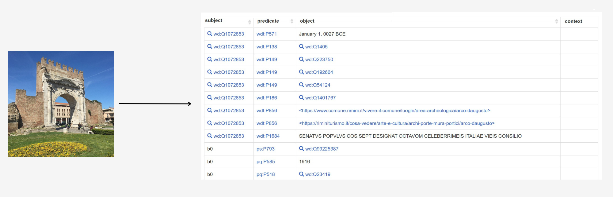
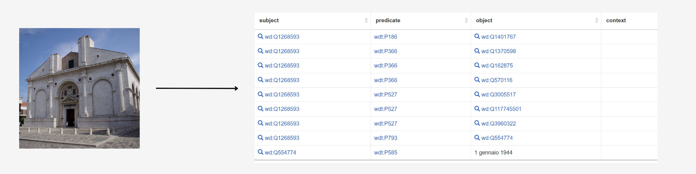
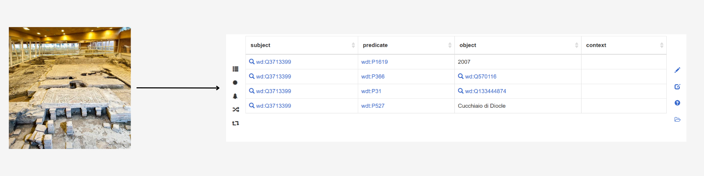
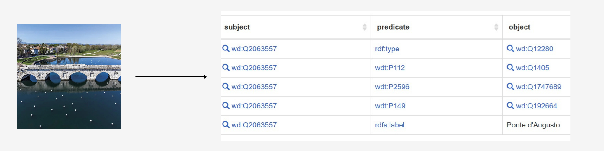
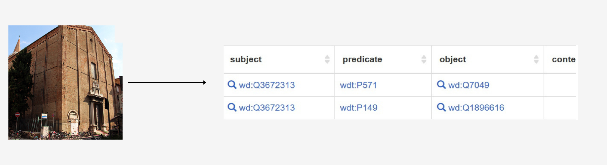

Conclusions
Throughout this project, we explored the use of SPARQL queries, Wikidata, and Large Language Models (LLMs)
to improve the quantity and quality of information about the entities of the principal historical monuments in Rimini.
Here are all the potential triples we created to enrich the knowledge graph for each entity:
    
What we learned thanks to this project
- To make queries to investigate a KG to find relevant information;
- To design triples by using SPARQL CONSTRUCT and LLMs;
- To prompt LLMs and the importance of verifying and evaluating their outputs;
- To create a website reporting the details and results of our project.
The project demonstrates how Artificial Intelligence and human intelligence can work together to enrich a KG like Wikidata.